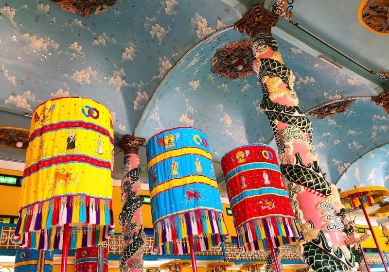

Tòa Thánh Tây Ninh - Công trình kiến trúc tôn giáo nổi tiếng thế giới
Tòa Thánh Tây Ninh được xem là một trong những công trình kiến trúc tôn giáo vĩ đại nhất của đạo Cao Đài. Đây cũng là một trong những điểm du lịch thu hút đông đảo du khách tham quan tại Tây Ninh.
Không chỉ là điểm check-in lý tưởng, Tòa Thánh Tây Ninh còn là công trình văn hóa nổi tiếng, hội tụ những phong cách kiến trúc độc đáo thu hút hàng nghìn lượt du khách tham quan hằng năm. Công trình vĩ đại của đạo Cao Đài cũng rất gần với nhiều điểm du lịch khác tại Tây Ninh, thuận tiện cho việc di chuyển của du khách.
1. Giới thiệu Tòa Thánh Tây Ninh
Tòa Thánh Tây Ninh hay còn được người dân địa phương gọi với cái tên thân thuộc là Đền Thánh. Công trình này tọa lạc tại đường Phạm Hộ Pháp, thị trấn Hòa Thành, tỉnh Tây Ninh.
Tòa Thánh Tây Ninh là công trình kiến trúc độc đáo bậc nhất (Ảnh: Sưu tầm)
Một trong những nét độc đáo của kiến trúc Tòa Thánh Tây Ninh đó chính là sự kết hợp phong cách của nhiều văn minh tôn giáo trên thế giới. Vì vậy, du lịch Tòa Thánh Tây Ninh chắc chắn sẽ là chuyến đi mang đến cho bạn nhiều trải nghiệm về văn hóa, kiến trúc.
Cụ thể, nơi đây gây sự chú ý với khách tham quan đó chính là hai lầu chuông và trống cao chót vót - Công trình này có nét tương đồng với hệ thống tháp chuông tại các nhà thờ Thiên Chúa Giáo. Phần giữa, Tòa Thánh Tây Ninh được thiết kế với tượng Đức Phật Di Lặc ngự trị ở phần nóc.
Hình ảnh Tòa Thánh Tây Ninh còn gợi cho du khách sự liên tưởng về hình tròn của Trời và hình vuông của Đất. Đây cũng là những lý thuyết về vũ trụ quan trong Nho Giáo mà bạn có thể khám phá thêm sau chuyến đi tại Tòa Thánh Tây Ninh.
Bát Quái Đài của Tòa Thánh Tây Ninh có hình dạng tương đồng với Bát Quái Đồ của Đạo Tiên. Trên nóc của chi tiết này còn có 3 pho tượng Phật. Bên trong Tòa Thánh Tây Ninh được xây dựng với Cửu Trùng Đài có 9 cấp bậc từ thấp lên cao.
Về cơ bản, công trình Tòa Thánh Tây Ninh hội tụ nhiều kiến trúc độc đáo từ nhiều công trình tôn giáo trên thế giới. Đây cũng là công trình thể hiện rõ tôn chỉ của đạo Cao Đài, đó chính là: Tam giáo quy nguyên, Phục Nhứt Ngũ Chi.
Tòa Thánh Tây Ninh từ góc nhìn trên cao (Ảnh: VnExpress)
Với kinh nghiệm tham quan của nhiều du khách trong và ngoài nước, để thuận tiện nhất cho chuyến đi của mình, bạn không cần chọn khách sạn gần Tòa Thánh Tây Ninh mà nên lựa chọn các khách sạn ở trung tâm để lưu trú sẽ thuận tiện cho việc di chuyển giữa các điểm tham quan du lịch mà vẫn đảm bảo thuận tiện di chuyển tới Tòa Thánh Tây Ninh.
Tòa Thánh Tây Ninh từ góc nhìn trên cao (Ảnh: VnExpress)
Melia Vinpearl Tay Ninh là gợi ý phù hợp nhất với khoảng cách chỉ 5km rất thuận tiện cho bạn tham quan Tòa Thánh Tây Ninh cũng như kết nối với nhiều điểm du lịch khác. Hiện nay, đây cũng là khách sạn sang trọng bậc nhất tại Tây Ninh.
2. Vẻ đẹp kiến trúc độc đáo của Tòa Thánh Tây Ninh
2.1. Kiến trúc đặc trưng: Quan điểm triết học Đông - Tây
Tòa Thánh Tây Ninh là một trong những công trình tôn giáo có kiến trúc rất đặc trưng, không giống với bất kỳ công trình nào hiện nay. Nếu như những công trình lớn thường có kiến trúc sư thiết kế, xây dựng theo bản vẽ… thì Cao Đài Tòa Thánh Tây Ninh lại được Đức Phạm Hộ Pháp xây dựng không dựa trên bất kỳ giấy tờ, hình vẽ nào mà hoàn toàn dựa vào công sức, bàn tay của người lao động.
Tòa Thánh Tây Ninh từ góc nhìn trên cao (Ảnh: VnExpress)
Tòa Thánh Tây Ninh được góp sức xây dựng bởi người dân mà họ không lấy bất kỳ chi phí công sức nào, thậm chí họ còn không lấy vợ, cưới chồng trong thời gian thi công để đảm bảo đủ âm dương cho công trình. Mọi lý thuyết về kích thước, kiến trúc đều được Đức Lý Giáo Tông Giáng Cơ chỉ đạo người dân thực hiện. Cứ như vậy, công trình Tòa Thánh Tây Ninh được hoàn thiện sau 5 năm xây dựng.
Quan niệm “Tam giáo đồng quy” trong kiến trúc bên trong của tòa thánh (Ảnh: Sưu tầm)
Đây là công trình có kiến trúc độc đáo với sự phối hợp hài hòa giữa đất trời và con người. Tòa Thánh Cao Đài Tây Ninh là một nơi rất thiêng liêng để phục vụ nhu cầu chiêm ngưỡng và cúng bái, là nơi hội tụ kiến trúc độc đáo của triết học Đông - Tây. Vì vậy, Tòa Thánh Tây Ninh là một trong những điểm du lịch tôn giáo lý tưởng tại địa phương này.
2.2. Khuôn viên bên ngoài
-
Tổng diện tích xây dựng lên tới 12 km2: Chùa Tòa Thánh Tây Ninh được thiết kế với hệ thống hàng rào bao quanh, đảm bảo sự uy nghiêm của điểm du lịch tôn giáo. Bên cạnh đó, công trình này còn có nhiều công trình nhỏ hiện đại bên trong bao gồm: Tòa Thánh, đền thờ Phật Mẫu, Bửu tháp.
Khuôn viên rộng lớn bên ngoài Tòa Thánh Tây Ninh (Ảnh: Báo Tây Ninh)
-
Chiều dài khoảng 100m: Công trình Tòa Thánh có thiết kế với 12 cửa, cửa lớn nhất có tên là cửa Chánh Môn.
-
2 tháp cao 36m: Đây là biểu tượng nổi bật ở phía ngoài Tòa thánh. Bên cạnh đó, một trong những điểm đặc biệt của công trình này đó chính là sử dụng chất liệu xi măng cốt tre để xây dựng.
-
Tòa Thánh Tây Ninh có tổng tất cả 12 cổng vào. Tất cả những cổng này đều được chạm khắc tinh tế với hình tứ linh và hoa sen. Cửa Chánh Môn lớn nhất có cách thức trang trí đặc biệt hơn, đó là hình tượng long tranh châu.
Khuôn viên rộng lớn bên ngoài Tòa Thánh Tây Ninh (Ảnh: Báo Tây Ninh)
-
Công trình này được xây dựng với loại có mái và không có mái: Phong cách kiến trúc độc đáo của Tòa Thánh Tây Ninh cũng được thể hiện qua phần mái của công trình. Về cơ bản, kiến trúc của những công trình này đều giống nhau.
Nhiều du khách khi đến tham quan Tòa Thánh Tây Ninh nhận thấy thiết kế mái của công trình này có điểm tương đồng với nhiều chùa truyền thống ở Bắc Bộ. Tức là công trình sẽ có 4 trụ xây và được phân tách thành 3 lối vào riêng biệt.
2.3. Vẻ đẹp bên trong
Bước vào bên trong Tòa Thánh Tây Ninh, du khách sẽ ngỡ ngàng trước một công trình kiến trúc vô cùng độc đáo. Tại đây, bạn sẽ thoải mái chiêm ngưỡng những chạm khắc vô cùng tinh tế, cho thấy sự tài hoa của những người đã xây dựng nên công trình nổi tiếng này.
Kiến trúc bên trong Tòa Thánh Tây Ninh rất độc đáo (Ảnh: VnExpress)
-
Hai hàng cột phía trong tòa: Đây là điểm chú ý nhất ở Tòa Thánh Tây Ninh. Những chi tiết này được chạm trổ hình rồng, sử dụng nhiều màu sắc khá rực rỡ.
-
Phần nền của công trình được thiết kế với 9 cấp: Chi tiết này còn được gọi là “cửu phẩm thần tiên”. Mỗi cấp này biểu tượng cho một cấp phẩm.
-
Quả cầu lớn đặt ở giữa: Du khách đến tham quan bên trong công trình tâm linh này có thể thể để ý thấy một quả cầu lớn đặt giữa. Chi tiết này biểu tượng cho vũ trụ bao la và cũng là một chi tiết tạo nên nét đẹp độc đáo của Tòa Thánh Tây Ninh.
-
Hình Thiên Nhãn: Lịch sử Tòa Thánh Tây Ninh khiến cho rất nhiều du khách tò mò về công trình kiến trúc này. Từng chi tiết bên trong đều được chạm trổ hết sức kỳ công. Phần trước của tòa tháp còn được đặt hình Thiên Nhãn - đây được xem là một con mắt, biểu tượng cho sự hào quang và của đạo Cao Đài.
-
Nghinh Phong Đài và Bát Quái Đài: Phần nóc trước được thiết kế với chi tiết Nghinh Phong Đài và phía nóc sau có Bát Quái Đài. Đây là hai chi tiết độc đáo trong kiến trúc của công trình tâm linh nổi tiếng này.
3. Lễ hội độc đáo ở Tòa Thánh Tây Ninh
3.1. Lễ Vía Đức Chí Tôn
-
Thời gian tổ chức: Mùng 9 tháng Giêng hằng năm.
Lễ vía Đức Chí Tôn là một trong những lễ hội Tòa Thánh Tây Ninh khá nổi tiếng được đông đảo người dân địa phương và khách du lịch biết đến. Đây cũng là lễ hội lớn trong năm được tổ chức tại công trình này.
Trong thời gian diễn ra lễ hội, hàng nghìn người dân sẽ có mặt ở bên ngoài Tòa Thánh Tây Ninh để chiêm ngưỡng vẻ đẹp độc đáo của rồng nhang. Bên cạnh đó, du khách còn được chứng kiến những điệu nhảy vui tươi, độc đáo của ngọc kỳ lân, quy, phụng, long mã…
Lễ Vía Đức Chí Tôn được diễn ra vào tháng Giêng, thu hút sự tham gia của đông đảo người dân và du khách (Ảnh: Sưu tầm)
Hệ thống dàn nhạc sắc tộc cũng được thực hiện trước đền Thánh, Báo Ân Từ tạo nên một âm hưởng vô cùng sôi động. Sau đó, dàn nhạc này sẽ diễu hành qua Đông Tây khán đài, tạo nên một khung cảnh cực kỳ sôi động.
Du khách đến tham quan Tòa Thánh Tây Ninh trong thời điểm tổ chức lễ hội còn được trải nghiệm với 31 gian hàng trưng bày nhiều mô hình lịch sử…. Với hoạt động này, bạn sẽ phần nào hiểu biết thêm về văn hóa, những giá trị nhân văn của con người và truyền thống dân tộc Việt Nam.
3.2. Hội Yến Diêu Trì Cung
-
Thời gian tổ chức: Rằm tháng tám âm lịch. Hội Yến Tòa Thánh Tây Ninh là một trong những lễ hội thu hút đông đảo sự tham gia của người dân và khách du lịch.
-
Đặc sắc màn múa rồng, lễ ăn chay tập thể: Lễ hội bắt đầu bằng màn trình diễn múa Rồng nhang độc đáo bao gồm: Long, Lân, Quy, Phụng. Du khách đến đây sẽ được hòa mình vào một không gian vô cùng nhộn nhịp. Múa rồng nhang Tòa Thánh Tây Ninh là một trong những hoạt động độc đáo ở phần lễ, du khách không nên bỏ lỡ khi có dịp ghé thăm địa điểm này. Ngoài ra, bữa ăn chay tập thể tại Tòa Thánh Tây Ninh cũng là một trong những hoạt động độc đáo tại lễ hội này.
Hoạt động múa Rồng nhang trong lễ hội (Ảnh: Sưu tầm)
-
Nhiều hoạt động nổi bật: Vào những ngày gần diễn ra, bạn sẽ cảm nhận được sự nhộn nhịp khi bà con nơi đây chuẩn bị, sửa sang con đường, cây cảnh cho lễ hội. Phần lễ được diễn ra với các hoạt động của đạo như cúng bái, rước cộ bông, múa Rồng nhang, ngọc kỳ lân, quy, phụng… Phần rước cộ bông Đức Phật là một hoạt động lớn nhất của lễ hội này. Đây cũng là màn biểu diễn được đầu tư rất công phu của bà con giáo dân tại đây.
Hoạt động múa Rồng nhang trong lễ hội (Ảnh: Sưu tầm)
Thông thường, du khách sẽ được tham quan các hoạt động lễ hội tại Tòa Thánh Tây Ninh khi kết hợp với các tour du lịch đến địa điểm này. Để thuận tiện nhất cho lịch trình của mình, bạn nên lựa chọn khách sạn nghỉ dưỡng gần trung tâm thành phố.
Melia Vinpearl Tay Ninh chỉ cách điểm du lịch này khoảng 5km - đây là khách sạn trung tâm với hệ thống phòng nghỉ sang trọng, hiện đại sẽ giúp cho bạn thoải mái nghỉ dưỡng, đồng thời tiết kiệm chi phí, thời gian khi đi đến các điểm du lịch khác.
4. Lưu ý cho du khách khi ghé thăm Tòa Thánh Tây Ninh
Là một trong những điểm du lịch khá nổi tiếng tại Tây Ninh, Tòa Thánh Tây Ninh thu hút một lượng lớn du khách tham quan hằng năm. Để thuận tiện cho chuyến đi của mình, bạn cũng cần cân nhắc một số lưu ý sau đây:
- Giờ lễ chính tại đây là 12h trưa. Nếu bạn chuẩn bị để tham gia chiêm bái, cúng lễ tại địa điểm này thì nên cân đối về mặt thời gian .
Giờ chính lễ tại Tòa Thánh Tây Ninh là 12 giờ (Ảnh: Sưu tầm)
- Bạn có thể tham quan bất kỳ giờ nào tại địa điểm du lịch này, tuy nhiên, du khách sẽ không được mang giày dép vào bên trong. Ngoài ra, bạn cũng nên giữ vệ sinh chung, đi nhẹ nói khẽ để đảm bảo sự tôn nghiêm của điểm du lịch tâm linh.
- Du khách có thể vào Đại Điện từ hai bên cửa, tuy nhiên, bạn cần chú ý, nam giới đi vào bằng cửa phải, nữ giới đi vào bên cửa trái.
- Tòa Thánh Tây Ninh là điểm du lịch tâm linh, tôn giáo, vì vậy du khách đến đây cần lựa chọn trang phục lịch sự, tránh mặc quần đùi, váy ngắn... để không ảnh hưởng đến sự tôn nghiêm của Tòa Thánh.
Tòa Thánh Tây Ninh hiện nay đã trở thành một trong những điểm du lịch hấp dẫn du khách bởi phong cách kiến trúc độc đáo, ấn tượng. Bên cạnh đó, Tòa Thánh Tây Ninh cũng gần với nhiều điểm du lịch lân cận, các quán ăn ngon độc đáo, đáp ứng nhu cầu du lịch của người dân hiện nay.
Melia Vinpearl Tay Ninh được xem là điểm lưu trú phù hợp nhất dành cho các tour du lịch tại mảnh đất này. Không chỉ sở hữu vị trí tọa lạc trung tâm, nơi đây còn sở hữu hệ thống phòng nghỉ sang trọng, các dịch vụ đa dạng, hệ thống nhà hàng nổi tiếng bậc nhất giúp cho bạn có được chuyến đi tuyệt vời tại Tây Ninh.
Lưu ý: nội dung trang web được lấy từ: Vinpearl